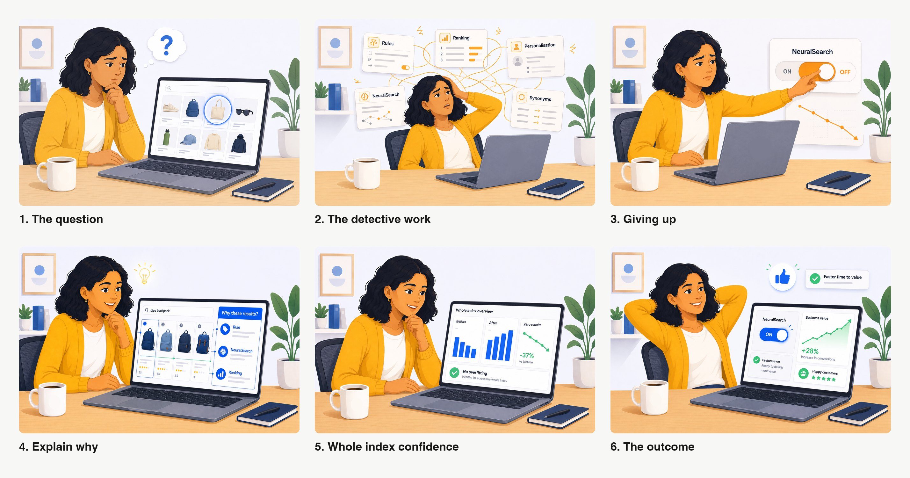
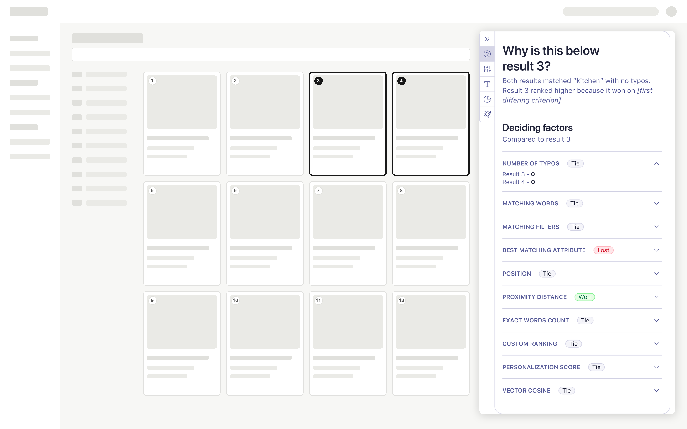
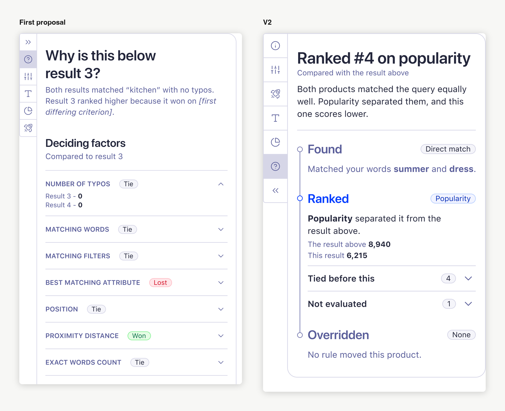
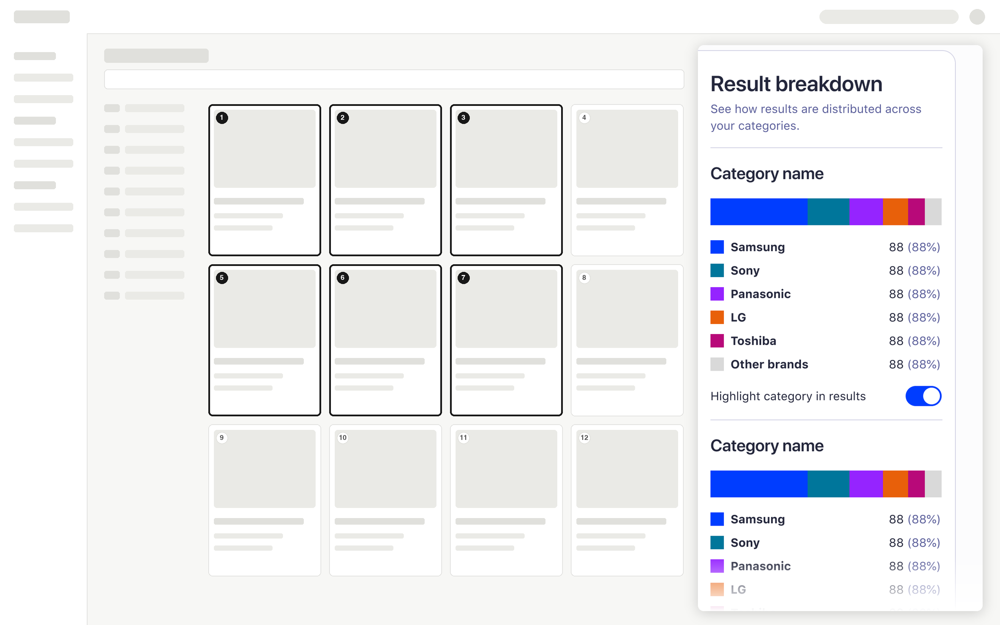
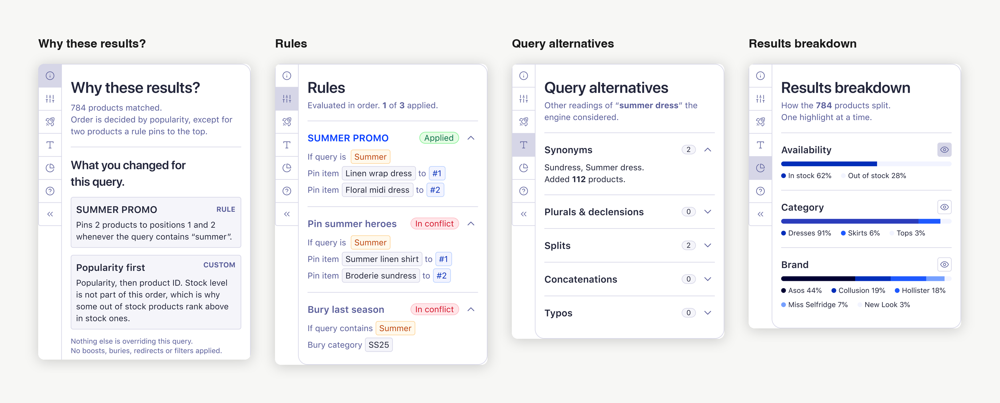

Algolia · 2026, in progress · Design lead for research, diagnosis, strategy and the V1 designs
A six week tool brief, returned as a diagnosis of why the tool kept dying.
Algolia sells search to businesses. Their customers tune how results rank inside a dashboard, then look at a page of results and cannot tell why each one landed where it did. A tool would answer that in one place.
I was asked to scope six weeks of build. I mapped the earlier attempts, built a five claim evidence base, designed and prototyped a first version and ran nine feedback sessions, two of them with the people who diagnose by hand today.
The direction is now endorsed by the VP of Product and the conversation moved from whether to build a tool to who owns it. I cannot claim a shipped tool, so I do not.
The principal move was spending a build brief on finding out why the build kept failing. Legibility, turned on the organisation itself.
Algolia sells search to businesses. Their customers tune how results rank inside a dashboard, then look at a page of results and ask two questions. Why these? Why in this order? The answer is spread across half a dozen screens, so most people give up and ask a human. A tool to answer it in one place had been attempted several times inside the company and binned every time.
I was asked to scope what six weeks of build could achieve. Instead of designing the tool again, I spent the time finding out why it kept dying, built the evidence base and the first version anyway, then put it through nine feedback sessions, two of them with the people who do the job by hand. The direction is now endorsed by the VP of Product. The conversation moved from whether to build a tool to who owns it. I cannot claim a shipped tool, so I do not.
The problem hides inside a stack. A search result comes out of layers of features, keyword matching, ranking, rules, synonyms, NeuralSearch, re-ranking. When the order looks wrong, the cause is buried in there somewhere. Two different failures wear the same mask. Either the results are wrong, which is a relevance problem, or they are right and badly ordered, an out-of-stock item sitting at the top, which is a ranking problem. You cannot fix either until you know which one you have.
The person staring at that page mostly cannot tell. Diagnosis today is manual, reassessing hundreds of queries one at a time. It gets worse as AI features stack up, because every new layer is one more place the cause can hide.
The features people cannot explain are the ones they switch off. The usage data is blunt about this. Close to one in four activations of one opaque AI feature were rolled back within the hour, while a comparable feature that showed its working stuck. Explainability here is trust and retention, not a nicety. Every unexplained ranking is a customer one step closer to turning something off.
On the surface this was a tool brief. Underneath, it was an ownership problem. I was asked to scope what six weeks of build could achieve. The easy reading was to design the tool. It would have demoed well. But mapping the prior art on day one showed this was not a new idea. Several teams had each built a version independently and every one had stalled. So I asked the question nobody had stopped on. If it is so obviously needed and so often attempted, why does it keep dying?

That was a gamble with six weeks, no mandate and no team. The visible win was a concept that would stall like the others. I took the quieter one and it changed what the organisation was solving for.
I did not invent the idea of explaining search ranking. Several people had, before me. My job was to work out why none of their versions had become a product, then build enough of one to test that answer.
I owned the prior-art research, the evidence base, the framing, the V1 design and prototype, the nine-session feedback programme and the ownership argument that came out of it. When the build stopped, I wrote the front-end capacity case that followed.
The demand was over-proven and re-proving it was the trap. The need was documented across half a dozen teams, so re-running discovery would have burned the six weeks on the one thing nobody disputed. Yet a design with no sponsor was exactly what had killed every previous attempt.
The people who feel this pain, solutions engineers, merchandisers, the customers themselves, cannot build the fix. The team who can build it does not feel the pain. That split is structural rather than personal, which is why no amount of better design had ever moved it.
I paired every claim with a customer voice and a usage number. Customers cannot tell why results are poor. Diagnosis is manual. It worsens as features stack. It carries a cost. The demand is repeated. Each of the five had a quote and a figure behind it, pulled from sales calls and product analytics. The rollback pattern turned the cost claim from the weakest leg into the strongest, because it showed people abandoning a feature within the hour rather than complaining about it.
Outcome.
The proposal became the front door for the whole effort, something a sponsor could pick up and own rather than a sixth restart.
Every prior attempt could compare one query. None could show whether a change helped or hurt across the whole index. That gap is what I argued should be owned. It is unbuilt. It was new even to the builders of the most mature prototype, which is the test I wanted the framing to pass.
What I designed and built is deliberately narrower. V1 is one view answering why one result landed where it did. Five panels on the real dashboard chrome, built on the company design system's own components and tokens, pulling the scattered "why" into one place. It holds back any sandbox, any verdict on relevance versus ranking and real data, so the one thing under test stayed clean. Does consolidating the explanation actually help someone understand?

Outcome.
A code prototype and a Figma set that had drifted apart, reconciled, plus a screen real enough to be argued with.
I stopped polishing and put the prototype in front of the two hardest audiences on the same day. A domain expert on correctness, then the PM who owns retrieval, who is the technical ground truth. Then I kept going. Nine sessions over five weeks, published as a dated trail so every design decision traces back to who said what. Two of those sessions were with the people who diagnose this by hand today, a solutions architect and an enterprise merchandiser who used to do the job as a customer.
"To apply the actual ranking is hard, but then to know if it's in effect, you really can't see it anywhere." An enterprise merchandiser who used to do the job as a customer, in an internal feedback session.
Three findings changed the design and I had none of them going in. The way my prototype expressed one of the ranking steps was not merely complex but technically wrong, so I fixed the claim rather than the presentation. The settings a person has manually changed were the least visible thing on the screen, found independently by two people. Three people separately said the page fires everything at once, so the next pass was subtraction rather than addition.

Two reviewers also pulled in opposite directions, simplify aggressively against represent the engine accurately. The rule I set to resolve it now governs the tool. Simplify the presentation, never assert something technically false.

Outcome.
Sixty-eight findings went back onto the designs they judge, colour-coded four ways, working, broken, open question, opportunity. Recording what worked was as deliberate as recording what did not, because the green notes are the argument when this reaches a sponsor.
The highest-value move was naming the split, not drawing the screen. The people who had each built a version gave me the same diagnosis without prompting. The idea is sound and wanted, it just has no owner. I put that in writing and made it the spine of the proposal.
The rules panel shows what the same discipline bought on the screen itself. I made several rules on one query in the live product, found only one of them did anything and found nothing anywhere that explained why. Engine ground truth showed the behaviour presents as "the first rule I made wins". That reading is correct for the wrong reason. Dashboard-created rules are tie-broken on an internal identifier that happens to sort by creation time and nothing in the product exposes it. So the design retires the claim my own panel had been making and refuses the plausible rebuttal too, because both were wrong.
Strategic outcome.
The conversation moved from "should we build this" to "who owns it and what is the smallest useful slice".

The outcome is a shift, not a screen. The direction is endorsed by the VP of Product, whose framing matched mine independently. A missing sponsor was what stalled every previous attempt, so that endorsement is the outcome that matters most.
When front-end capacity said no, I stopped pushing code into production. The feature flag I shipped is merged. The draft pull requests were parked behind a published handover rather than closed, because the specs and the verified traps are what a future engineer actually inherits. The effort went into prototypes, which needed no reviewer, plus the capacity case, written as an argument with a cost attached rather than a gallery of unbuilt work. A gallery earns sympathy and not capacity.
Product.
A diagnosis, a scrutinised first design and an endorsed direction, where before there was a string of stalled prototypes and no owner.
Engineering.
A merged feature flag, two specs and a published handover, so the work can be picked up rather than rediscovered.
Design.
The rule the tool now runs on, set by nine sessions of scrutiny. Simplify the presentation, never assert something technically false.
Organisational.
The front-end capacity gap this work exposed became a written case with a cost attached rather than a complaint.
I cannot claim a shipped tool, revenue impact or a measured drop in diagnosis time, so I do not. Every session was internal. Two participants are strong customer proxies, but no customer has used this and no moderated usability study has been run, so I do not claim validated customer demand either. Those limits sit here rather than waiting for someone to find them.
The principal signal is not that I designed a diagnostics panel. It is that, handed a tool to design, I asked why the tool kept dying and returned a diagnosis of the organisation instead.
This work shows that I can take an ambiguous brief and find the real problem underneath it, build an evidence base that survives scrutiny from the technical ground truth, design and build a working prototype on the production design system, run a feedback programme and publish its trail, then hold a technically honest line when reviewers pull in opposite directions. It also shows where I spend effort once a route closes. The version of this where I keep pushing code into production is the version where the argument gets weaker, because the strongest artifact was never the code.
The tool was never the problem. The design had been proved doable several times over. What none of those attempts had was an owner. No amount of polish fixes that.
"This is not fundamentally a UI problem." An advisory strategist, in an internal feedback session.
If I was to do it again, I would show the prototype before it felt ready. I polished for longer than I needed to. The day I finally put it in front of the two hardest audiences did more for the design than the polishing had. The limits stay in the open too. Saying that no customer has used this yet costs nothing and makes every other claim on this page easier to believe.
The principal move. I was handed a tool to design and returned a diagnosis of why the tool kept dying. Legibility, turned on the organisation itself.
→ Full story and decisions in an interview